Cervolix, grand festival annuel sur le magnifique site du plateau de Gergovie, tout le monde sait où c'est, Gergovie (pas Alésia...). On promet de la voltige, des montgolfières, etc. La météo du vent est toujours capricieuse là-bas, mais on trouve toujours des moments favorables. Par exemple, le dimanche, on se lève avec Force 7, et le soir, il y a 0 : même mon Harfang indoor ne voudra pas prendre l'air !
Cervolix, grand festival annuel sur le magnifique site du plateau de Gergovie, tout le monde sait où c'est, Gergovie (pas Alésia...). On promet de la voltige, des montgolfières, etc. La météo du vent est toujours capricieuse là-bas, mais on trouve toujours des moments favorables. Par exemple, le dimanche, on se lève avec Force 7, et le soir, il y a 0 : même mon Harfang indoor ne voudra pas prendre l'air !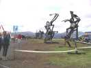
A l'arrivée sur le site, un autre changement, les "sculptures" qui "ornent" le haut du plateau et qui se voient de loin. Bien commodes pour attacher les cerfs-volants...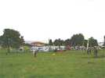
Les campings-caristes sont déjà nombreux sur le bas du terrain, mais aussi sur la place du Casque et sur le parking du haut. Il y a même des non-cervolistes qui sont venus par hasard passer un week-end au calme. Mal tombés !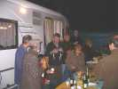
C'est l'anniversaire de Jean-Pierre. Avec le concours de quelques participants, ils ont préparé un pot qui en fait est un repas du soir, et raffiné, et abondant ! A tel point que Richard ne pourra placer son omelette aux rosés des prés ramassés sur place, et la reportera au surlendemain !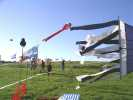
Samedi tôt : déjà quelques cerfs-volants, et François a monté ses moulinets !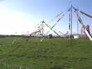
Michel Tournier a monté ses mâts multicolores et ses animations...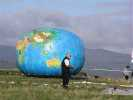
Par exemple le "globe" terrestre qui illustre bien l'aplatissement aux pôles pour l'affirmation duquel les géographes se sont confrontés il y a 2 siècles !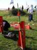
Ou encore le lancement des fusées à air comprimé vers la Lune gonflée au compresseur, à une quinzaine de mètres plus loin...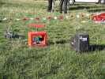
Pour les plus costauds, il faut pomper avec une pompe à pneus d'autos, ça stimule la course à la hauteur ! Pour les autres, Michel a prévu un compresseur, avec un déclencheur d'aspect guerrier !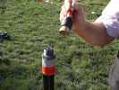
L'air comprimé est retenu par un diaphragme plus ou moins résistant et consommable. Quand il finit par éclater, la fusée part, très haut... et retombe dans la Lune... si on a bien visé (...avec la crémaillere) !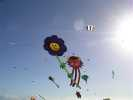
Jos est venu, avec ses splendides marguerites et bien d'autres CVs !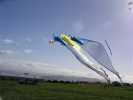
Une innovation, le tri-delta, qui ne vole pas mal.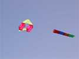
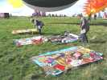
Il y a aussi des Japonais, Makoto Oe et un autre plus ancien, avec de magnifiques Edos peints !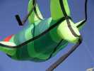
La tribu Awita est aussi présente et mettra plein de choses en l'air, le poisson vert...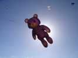
...le nounours, qui cache bien le soleil ! Ou beaucoup de deltas...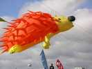
Je n'ai jamais vu le hérisson voler si haut et avec les piquants si roides !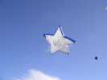
Cette splendide étoile, qui se passerait bien du logo central, a une taille que vous n'imaginez pas...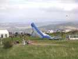
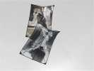
Intéressants, ces cerfs-volants en spi imprimés de gentes demoiselles ! L'auteur (espagnol) m'a dit que c'était imprimé mais que ça ne craignait pas l'eau ni rien mais je n'ai pas d'autres détails. Il en a aussi en couleur. Ca ouvre la voie à des réalisations intéressantes...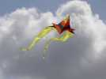
Cette fibule reprend celles de Michel Gressier, dans une taille plus raisonnable... Elle est aussi un peu moins bien tendue, mais vole quand même bien, ça change des sempiternels pyrodeltas !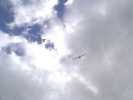
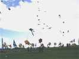
Sur un fond de ciel éblouissant, au bout des moulins de François, Joël a monté les siens avec la zizique habituelle !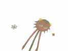
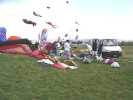
Au hasard des terrains, grand déballage de spi en tout genre...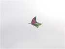
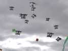
L'équipe italienne a sorti ses pentagones aux yeux tous semblables, mais différents...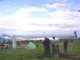
Autour du plateau, course d'avions racers qui se doublent et se redoublent à ras du sol (voire plus bas, ce n'est pas si difficile ici !). Ils sont très fins et très beaux (et très rapides !).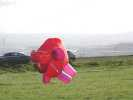
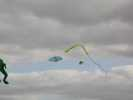
Dans les cerfs-volants exotiques, ce Wau avec un sifflet supérieur. Malgré sa queue, il vole souvent (mais pas longtemps) sur le dos...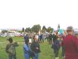
Beaucoup de public qui monte par l'allée centrale, avec cette météo assez favorable à une sortie, surtout que les buvettes-restaurants ne manquent pas, en haut, en bas, sur le côté...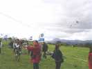
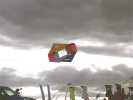
Des cerfs-volants que je ne connais pas, comme ce "XBox" très allongé...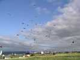
Par contre, les deltas innombrables des AWITA sont des classiques des rendez-vous comme d'habitude... Mais le vent de dimanche en cassera quelques-uns !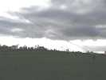
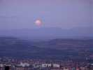
Mais on vole, on vole, et la lune se lève !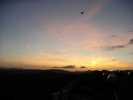
De l'autre bord, le soleil se couche, il est temps de changer d'activité !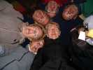
Vous avez deviné, on fait la queue pour le repas de fête du samedi soir, autant s'occuper, alors on pose !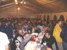
Et on peut se rendre à pied sous le magnifique barnum, bien rempli, déjà, et on sera servis à table, quel luxe !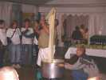
Au menu, aligot et saucisse, d'auvergne bien sûr. Pour préparer l'aligot, il faut de la purée, du fromage et... de l'huile de coude !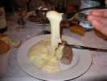
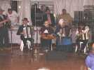
Un petit groupe vient agrémenter le dessert : orchestre avec cabrette (sorte de cornemuse avec soufflet sous le bras droit), vielle et accordéons... Ils viennent de Romagnat, qui a bien du mérite de produire un groupe de cette qualité, bravo !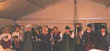
Il y a aussi une douzaine de danseurs et une présentatrice, tous en costume traditionnel, de campagne ou de ville. Ils ont tous l'air de beaucoup s'amuser !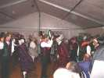
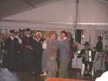
Il y a même des girls qui viennent compléter la troupe, toujours avec le sourire !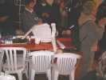
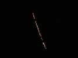
En concurrence avec le groupe musical (dommage), vol de nuit, mais sans projecteur, sans rien. On voit seulement quelques guirlandes de lampions... mais j'ai raté des choses : mini-montgolfière d'artifice, montgolfières en papier, etc...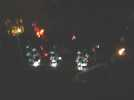
Et, bien sûr, les incontournables cactus lumineux de Fernando. Il a ajouté cette année des cactus courbes, et pour Cervolix, des projecteurs à LEDs placés au sol...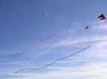
Le dimanche matin, Force 7 ! Mais il y a quand même des courageux qui ont mis en l'air un Sled à poches, plus tard agrémenté de longues queues tubulaires, vraiment très longues...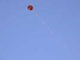
Les Pétillon résistent bien aussi au vent fort. Il suffit de rajouter des queues jusqu'à ce qu'ils ne bougent plus !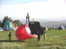
Plus tard, le vent ayant baissé, remontent toutes sortes de cerfs-volants comme celui-ci qu'on pourrait qualifier de Circoflex à bride trop courte, et d'autant plus resserré de derrière pour compenser la fermeture avant...